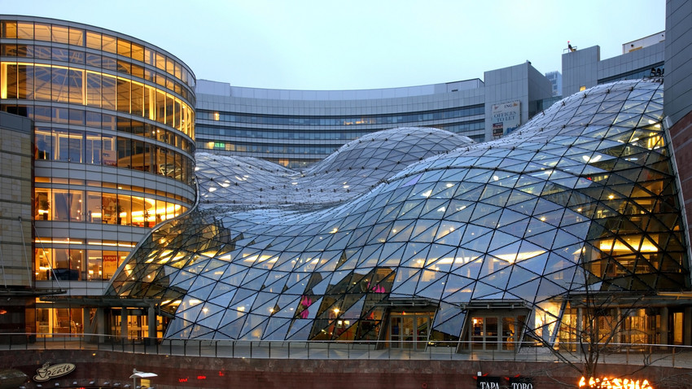
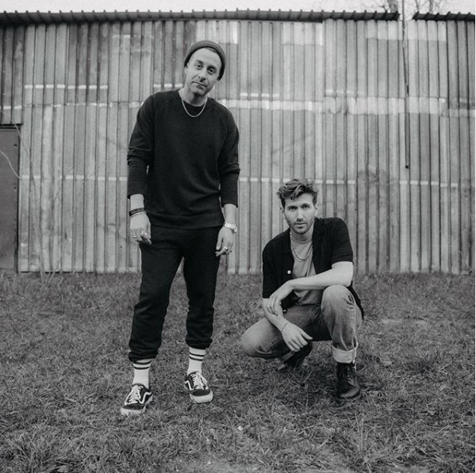
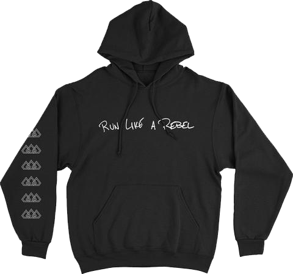
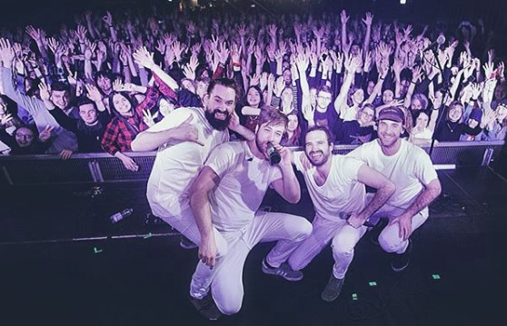
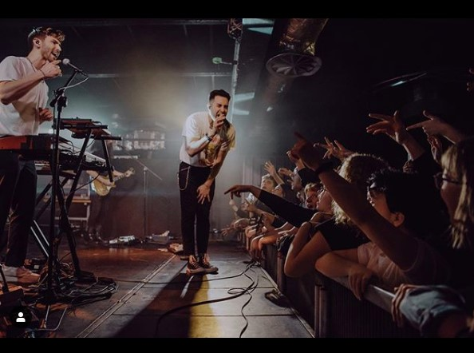
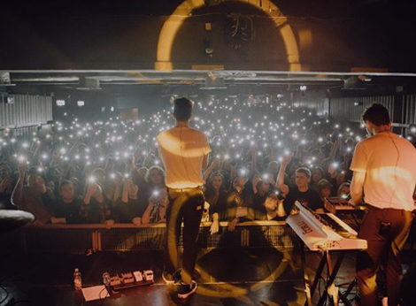
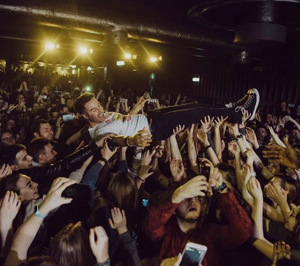

- Poprzedni rozdział
- Spis treści
- UWAGA! rozdział z multimediami. Jeżeli chcesz najlepiej przeżyć emocje związane z każdym rozdziałem, przesłuchaj/oglądnij każde wideo do końca. Gdyby wideo nie mogło się załadować, poczekaj chwilę i odśwież stronę.
Run Like a Rebel
Dawno mnie tu nie było, lecz jestem! Tym razem powracamy z tematem koncertu! A to wszystko stało się 1 marca 2020 roku... Niestety najgorszego roku, który utkwił mi w pamięci. Dlaczego najgorszego? Zobaczycie...
Wstając rano z łóżka, aż zaśpiewałem: "Oto ten dzień, ten wielki dzień" Tak długo czekałem na ten moment! Już dzisiaj będę mógł spotkać się z Łukaszem i z innymi. Jestem tak podekscytowany, że chyba zaraz zrobię dziurę w podłodze. Koncert ma się ogólnie odbyć w klubie Proxima, w Warszawie. Z racji, że już w sumie mieszkam w naszej przepięknej stolicy, to nie muszę przejeżdżać połowy Polski, tak jak moi przyjaciele.
Schodząc na dół, usłyszałem, jak mój brat, Kamil gra na kompie pff... Ciągle tylko jedno i to samo, ale nie mogę przecież mówić, że jest jakiś nienormalny, w końcu sam tak kiedyś robiłem. Znalazł sobie kolegów, zupełnie jak ja i grają ciągle: a to w Minecrafta, a to w Robloxa. Skubaniec skończył dopiero 5 lat, a już na gry się rzuca... Szacun! Pewnie będzie kolejny informatyk, zupełnie jak Łukasz.
Najlepsze jest to, że niedawno robiliśmy remont w domu, a najbardziej to zmieniła się chyba klatka schodowa. Kiedyś była obłożona deskami, czy czymś podobnym, nie wiem jak to się nazywa - mniejsza, teraz dalej nie wiem, czym jest obłożona, ale jest przepiękna. Dosłownie błyszczy się w śnieżnym kolorze. Przy okazji nareszcie miałem szansę samemu udekorować sobie pokój, bo Ola (moja macocha) ciągle miała 'swoją wizję mojego pokoju', no ale come on! Już miałem prawie osiemnaście lat! Brakowało mi tylko lekko ponad rok i trzy miesiące! Chciałbym już zacząć kurs prawa jazdy, żeby nie musieć tak długo czekać na te wymarzone uprawnienia do zaprzestania używania komunikacji miejskiej, albo telefonu do tatusia, żeby gdziekolwiek się dostać, no ale jeszcze nie mogę...
Tak w ogóle nie mówiłem, ale nauczyłem tatę programować i powiem, że był to świetny pomysł! Kiedyś zarabiał dość przeciętnie, a teraz żyjemy praktycznie w luksusie. Jeju! Nigdy bym nie przypuszczał, że mój tata przekwalifikuje się po tylu latach pracy jako elektryk! Co prawda moja macocha pracowała w dobrze prosperującej korporacji, ale jednak chciałem, aby mój tata nie był w większości od niej zależny. Nie miał on może jakiegoś bardzo wysokiego wykształcenia, co mogło się lekko przełożyć na jego zarobki, ale widziałem, że podoba mu się nowe stanowisko pracy. Od razu stał się jakiś taki weselszy, mniej zmęczony. Tak naprawdę to nie wspominałem, ale pracuje w CD Projekt Red. Pracują ostatnio nad tą tak długo wyczekiwaną grą Cyberpunk 2077. Z historii, które nam opowiadał tata, podobno był bardzo sfrustrowany tym, że musieli wyciąć tyle contentu z finalnej wersji gry, a nawet przełożyć ją na jesień. Praktycznie większość mechanik, które opracował w końcu musieli albo tak jak mówię, wyciąć lub przebudować na wzór 'mainstreamowych' gier. Zamiast czegoś oryginalnego kierownictwo musiało spaprać sprawę, ehh! Gdybym to ja o tym decydował, to jestem pewien, że gra byłaby dosłownie hitem!
Dobra, dosyć już tych moich przechwałek, zapewne nie można tego słuchać.
Ola: O widzę, że już wstałeś. Jak się spało?
Paweł: Szczerze powiedziawszy, to tak średnio. Znowu miałem jakiś dziwny sen...
Ola: Jaki znowu sen?
Paweł: Nie wiem, coś o pudlu biegającym z megafonem i krzyczącym coś po rosyjsku.
Ola: Ty to masz pomysły... Jesteś może głodny? Bo robię dla nas śniadanie.
Paweł: Umieram z głodu. Co będzie?
Ola: Do wyboru - sałatka warzywna lub omlecik.
Paweł: Hmm, ciężki wybór... A mogę to i to?
Ola: Pewnie! Smacznego!
Paweł: Dzięki. Tak w ogóle wiesz, że to już dzisiaj jest ten koncert?
Ola: Koncert? Tego zespołu, który przyjeżdża z USA, którego piosenki tak śpiewasz po nocach?
Muszę przyznać, że byłem lekko zawstydzony.
Paweł: Co? Skąd ty... No taaaa, to ten. Myślałem, że jestem cicho, przepraszam.
Ola: Nie przepraszaj! Ładnie śpiewasz, aż miło się tego słucha.
Paweł: Naprawdę? Myślałem, że to normalnie tragedia, według mnie fałszuję jak cholera.
Ola: A co to za brzydkie słówko?
Paweł: Mamo, daj już spokój, nie mam 10 lat...
Ola: Przecież żartuję głuptasie. Jedz lepiej, bo mi tu ugłodniejesz!
Po śniadaniu mama oczywiście musiała zadać pytanie, na które nie byłem zupełnie przygotowany.
Ola: Tak w ogóle mówiłeś mi, że poznałeś parę fajnych osób ostatnio, a wiem, że ciągle ze sobą rozmawiacie. Powiedz, masz tam jakąś ładną dziewczynę, czy coś?
Paweł: Yyyyyy...
Ola: Hm?
Paweł: Mamo no wiesz co?! Nie wiesz, że spotykam się z Anią?
Ola: Wiem, ale według mnie nie pasujecie do siebie. Zresztą jest jeszcze starsza od ciebie dwa lata. Może powinieneś...
Paweł: Dosyć tego... Nie mów mi z kim mam się spotykać, a z kim nie! Wiek akurat nie ma znaczenia. Mogłabyś się martwić, gdyby była ode mnie starsza z 10-15 lat, a nie dwa lata! Chyba lepiej, że spotykam się z nią, niż z jakąś 13-letnią niewychowaną gówniarą.
Ola: Nie mówię o trzynastolatkach, miałam na myśli bardziej w twoim wieku - jakaś piętnasto-szesnastolatka.
Paweł: Mamo proszę... Daj już spokój...
Ola: Synku po prostu się o Ciebie martwię. Pamiętasz, co było, kiedy twój brat skończył cztery latka?
Paweł: Wiem i wolę do tego nie wracać. Teraz się nam dobrze układa i nie mamy żadnych problemów.
Po tych słowach poszedłem do swojego pokoju. Tak naprawdę to miałem już dość słuchania tych bzdur. Co wiek ma do tego, czy do siebie pasujemy, czy nie! Wchodząc do pokoju, spoglądam na zegarek, godzina 10! Panikuję i nie wiem co robić. Przecież niedługo wszyscy przyjadą no come on! Trywialny problem, ale poważnie no idea, w co się ubrać... Dobra biorę jeansy i jakąś bluzę, to wystarczy. Może zadzwonię jeszcze do Ani.
Ania: Hej kochanie! Co tam?
Paweł: No cześć, dzwonię, bo chciałem się o coś zapytać.
Ania: No dawaj śmiało.
Paweł: Pamiętasz, że dzisiaj jest koncert co nie?
Ania: No... tak, a co?
Paweł: Miałabyś może czas pójść też ze mną? Bilety nie zostały wyprzedane i jestem pewien, że możemy kupić jeden dla Ciebie na miejscu.
Ania: Bardzo bym chciała, ale nie mogę. Jadę teraz do szpitala.
Paweł: O Boże, coś się stało?
Ania: Można tak powiedzieć... Mój tata... miał wypadek.
Serce dosłownie zaczęło mi walić z całej siły. Nie wiedziałem nawet co odpowiedzieć...
Paweł: Tak mi przykro... Wiadomo coś konkretnie?
Ania: Lekarze mówili, że jest w śpiączce.
Paweł: W którym szpitalu leży?
Ania: W Wolskim na ul. Kasprzaka 17.
Paweł: Zaraz tam będę.
Ania: A co z koncertem?
Paweł: Gdybym nie zdążył, to znajomi nagrają mi. Trudno, wolę być przy Tobie.
Ania: Naprawdę nie wiem co powiedzieć... Dziękuję...
Wybiegłem szybko z pokoju i poprosiłem tatę, aby zawiózł mnie do szpitala. Opowiedziałem mu całą historię i był tak samo zamurowany, jak ja. Przez drogę wspomniałem też o koncercie i o tym, że nie wiadomo, czy w ogóle tam pójdę. Jedyne co chciałem teraz zrobić, to być z Anią w tej trudnej dla niej chwili.
Chwilę później podjechaliśmy pod SOR. Szybkim krokiem poszliśmy pod oddział intensywnej terapii. Na korytarzu siedziała Ania, która miała całą twarz we łzach i jej mama, Agata. Ania wspominała mi, że jej rodzice się rozwiedli przed laty, ale widziałem, że jej mama wcale nie była mniej przejęta od niej. Razem z tatą usiedliśmy obok nich, wziąłem Anię za rękę i ją przytuliłem. Wiedziałem, ile on dla niej znaczy. Po rozwodzie zamieszkała właśnie z nim, a nie z matką. Opowiedziała nam też, co tak naprawdę się stało.
Według wstępnych oględzin Policja ustaliła, że bezpośrednim czynnikiem, który spowodował wypadek była eksplozja opony. Z prędkością około 95km/h, na drodze szybkiego ruchu S7, samochód przebił się przez barierkę i uderzył w wiadukt, mając po drodze cztery dachowania. Ucierpiał też jeden z kierowców, jadących tą drogą. Napisałem także do innych o sytuacji, że ojciec mojej dziewczyny miał wypadek i że nie wiem, czy na pewno będę. Tak naprawdę to chyba nawet niewerbalnie dawali mi do zrozumienia, że lepiej, gdy przy niej zostanę. Nie wiem już sam, co mam robić. Wiem, że to musi być dla niej bardzo ciężkie, sam straciłem mamę i co każdą niedzielę odwiedzam ją na cmentarzu...
Wtem obok nas biegnie lekarz i dwie pielęgniarki. Od razu przychodzą nam do głowy najgorsze scenariusze. Ania nie wytrzymała i wybiegła z oddziału, a ja za nią.
Ania: Paweł ja... Ja już po prostu nie mogę... Nie chcę go stracić! Nie chcę mieszkać z matką i tym jej facetem... Proszę, powiedz, że wszystko będzie dobrze!
Paweł: Aniu, proszę Cię... My już nic nie możemy zrobić. Wszystko w rękach lekarzy, ale jestem pewien, że Twój tata jeszcze z tego wyjdzie! To silny facet, mówię Ci, nie z takich rzeczy ludzie wychodzili.
Ania: Tyle że... Ja nie wiem... Nie wygląda to za dobrze. Nawet jeżeli, to w śpiączce będzie przez nie wiadomo jak długo, a ja nie chcę na to patrzeć! Nie chcę patrzeć na jego, leżącego na tym łóżku, uwięzionego we śnie, z którego nie może się wydostać...
Paweł: Wiesz... Bardzo dobrze Cię rozumiem. Sam przechodziłem to samo, kiedy zmarła moja mama. Nie wyobrażałem sobie, że życie ludzkie może się ot tak skończyć, w przeciągu kilku chwil. Ale ja wiem, że wszystko będzie dobrze. Musi!
Ania: Nie wiem, co ja bym bez Ciebie zrobiła... Dziękuję, że jesteś.
Po tych słowach wzięła i przytuliła mnie tak mocno, jak tylko mogła.
Paweł: Wiesz, masz bardzo dużo siły.
Ania: No wiem głuptasie.
Paweł: Chodźmy już, może dowiemy się czegoś nowego.
Zbliżając się do drzwi oddziału, zauważyliśmy płaczącą Agatę. Wiedzieliśmy, że to nie jest dobra oznaka.
Paweł: Co się stało? Lekarze mają jakieś informacje?
Tata: Tak jakby...
Ania: Mamo?!
Agata: Lekarze przyszli... I...
(Paweł, Ania): I co!?
Agata: I powiedzieli, że miał rozległy zawał... I że...
Ania (ze łzami w oczach): Że co?!
Agata: Że on... już z tego nie wyjdzie...
Słysząc to Ania zsunęła się po ścianie na podłogę i schowała głowę między nogi, głośno płacząc. Przyznaję, że sam miałem łzy w oczach... Chciałem do niej pójść, ale tata zatrzymał mnie, mówiąc, że potrzebuje czasu, żeby dojść do siebie. Byłem w szoku... Dopiero widziałem jej tatę trzy dni temu, kiedy byłem u Ani na kolację, a teraz? Zapadł w śpiączkę, z której się już nie wybudzi. Zapewne lekarze odłączą go kiedyś od respiratora i przestanie błąkać się we śnie...
Tata nalegał, żebyśmy już pojechali, bo cokolwiek bym powiedział mogłoby ją jeszcze dobić, tak też zrobiliśmy. Powiedzieliśmy Agacie, że musimy już jechać i że współczujemy straty tak bliskiej osoby.
Pewnie Ania mnie za to znienawidzi... Nie chcę tego, ale muszę coś zrobić. Zostając przy niej wcale jej nie pomogę, a wręcz przeciwnie. Kiedy poszedłem za nią, powiedziałem jej, że wszystko będzie dobrze, a parę chwil później dowiedzieliśmy się, że jej tata się już nie wybudzi. Dosyć tego... Czegokolwiek nie zrobię, tylko wszystko psuję. Po prostu chodźmy już stąd...
**Jakiś czas później**
Ola: O mój Boże, mówcie, jak on się czuje?
Tata: To było poważniejsze, niż nam się wydawało...
Paweł: O wiele...
Ola: To znaczy?
Tata: Po tym jak zapadł w śpiączkę, dostał rozległego zawału, prawdopodobnie już się z niej nie wybudzi.
Ola: Biedna Ania... Przyznaję, byłam może do niej sceptycznie nastawiona, ale to przykre słyszeć, że tak bliska osoba już prawdopodobnie nigdy nie wstanie.
Paweł: A ja... Kiedy wybiegła po tym, jak lekarze weszli na salę... Chciałem ją pocieszyć. Powiedziałem jej, że wszystko będzie dobrze, że jej tata to twardy gość i że się jeszcze z tego podniesie... Widziałem ten błysk w jej oku. Błysk nadziei. Błysk, który zgasł, gdy tylko wróciliśmy przed salę. Mamo ja...
I wtedy łzy stanęły mi w oczach i zacząłem płakać. Czułem się zupełnie, jak po śmierci swojej mamy. Kamil podszedł do mnie i mocno mnie przytulił. Zrobili tak też moi rodzice, tyle że to było bezcelowe. Nic już nie przywróci Ani ojca, tylko cud.
Tata: No to jak będzie z tym koncertem synek? Idziesz, czy zostajesz w domu?
Paweł: Wiesz... Jest mi smutno, ale chciałbym spotkać się z Łukaszem. Tak dawno go nie widziałem, więc chyba pójdę.
Ola: Idź, rozerwij się, dopóki jesteś młody. To nie czas na smutki. Baw się dobrze!
Paweł: Dzięki.
Na grupie było już chyba z 5000 wiadomości, każdy jarał się, że wreszcie się spotkamy, a ja miałem mieszane uczucia. Niby fajnie, ale jednak byłem smutny. Wiem jedno, nie mogę im o tym powiedzieć. Będę się dobrze bawił i nie będę myślał o tacie Ani. Włączyłem sobie jedną ze ulubionych piosenek i mogę się wybierać! W sumie była już czternasta, a mieliśmy się spotkać tak gdzieś mniej więcej o tej godzinie w Złotych Tarasach. No to co? Idziem!
Idąc tak przez ulicę, czułem coraz więcej wibracji w telefonie i występowały one coraz częściej, więc musiałem sprawdzić co tam się dzieje, czy oni powariowali, czy co? Patrzę a tu zrobili sobie grupowe pod Sephorą i piszą, że czekają na mnie. Ja pierdzielę, no to szykuje się niezły sprint - 1.5 km. Ale zanim zrobię sobie nieplanowany trening, wbiję do sklepu i kupię sobie coś na wszamanie. Jestem głodny jak nie wiem co! Może batonika? Zobaczy się.
Po wyjściu ze sklepu zobaczyłem dość ciekawą rzecz. Coś czego nigdy bym się nie spodziewał, zupełnie jakbym zobaczył ducha, czy coś. Totalnie mnie zamurowało. Nigdy bym nie uwierzył, jakby ktoś mi powiedział, że zobaczę tatę Ani idącego z nią przez ulicę, zaraz po tym, kiedy usłyszałem, że nie wybudzi się już ze śpiączki. A jednak. Tylko... Jak?! Dlaczego mnie okłamała? Muszę się prędko dowiedzieć. Wiem! Zadzwonię do niej i zobaczymy, co mi powie.
Włączyłem połączenie na słuchawkach i zacząłem truchtem biec w ich kierunku. Miałem na głowie kaptur i komin ze względu na to, że było troszkę chłodnawo, więc nie będzie im łatwo mnie poznać. I faktycznie, zatrzymali się na chwile, a dziewczyna wyciągnęła telefon z kieszeni, więc ja też stanąłem w miejscu, żeby lekko odsapnąć.
Paweł: Aniu, jak się czujesz?
Ania: Bywało lepiej...
Paweł: Przepraszam, że wtedy pojechałem ze szpitala, ale nie chciałem jeszcze pogorszyć sytuacji. Wiem, że nie mógłbym ci pomóc w żaden sposób, a tylko jeszcze bym cię bardziej zasmucił.
Ania: Dobra, nie szkodzi. Co robisz?
Paweł: Wyszedłem trochę pobiegać, oczyścić głowę z tego wszystkiego. Za dużo się dziś wydarzyło... A ty?
Ania: Jestem dalej w szpitalu, przy tacie. Nie mogę uwierzyć, że mnie opuścił w tak ważnej dla mnie chwili...
Paweł: Mi też jest przykro... Wiem jak się czujesz, chciałbym Ci pomóc, a jestem bezsilny.
Ania: Wiesz co, muszę kończyć. Zadzwonię później.
Kiedy wypowiadała te słowa, widziałem, że dziewczyna idąca przede mną z tym mężczyzną robi to samo. Nie było innego wyjścia, to musiała być ona. Nawet słyszałem jej głos, kiedy ściągnąłem słuchawki. Nie mam już nic do stracenia, idę tam, wygarnę jej wszystko. Mam nawet plan. Udam, że po prostu biegnę i zapytam się o godzinę, bo rozładował mi się telefon.
Paweł: Przepraszam, że przeszkadzam. Jestem już spóźniony, a rozładował mi się telefon. Czy mogłaby mi Pani powiedzieć, która jest godzina? Kompletnie zapomniałem o naładowaniu go przed wyjściem.
?: Ależ tak.
Ania: 14:37.
Paweł: (Wiedziałem, że to ona. Pora jej to wszystko wygarnąć, mam tego
dosyć, miarka się
przebrała.)
[Ściągając kaptur i komin] Myślałem, że jesteś w
szpitalu.
Ania: Paweł? Ja... Dopiero... Wyszłam.
?: Paweł? Jak się czujesz, młody?
Paweł: Dosłownie miałem Pana o to zapytać...
Ojciec Ani: A dlaczego, co się stało?
Ania: Ja... Ja wszystko-
Paweł: Ty już lepiej się nie odzywaj.
Ojciec Ani: O co chodzi?
Paweł: No bo wie Pan, zadzwoniłem rano do Ani, a ona powiedziała mi, że miał Pan wypadek. I że leży Pan w śpiączce.
Ojciec: Aniu, czy to prawda?
Ania: Tak...
Paweł: I teraz powiedz mi, jak ja mogę Ci zaufać z czymkolwiek? Dopiero płakałaś w szpitalu, bo podobno Twój tata nie miał szans na przeżycie, a teraz tak po prostu sobie z nim idziesz ulicą? Kiedy Ty przestaniesz mnie okłamywać? Powiedz mi, czego jeszcze nie wiem?
Ania: Tam w szpitalu... To był drugi mąż mojej mamy. I... Tak, okłamywałam Cię niejednokrotnie. Pamiętasz sytuację z Twoim bratem? To wszystko było kłamstwem. Jesteś po prostu kompletnym nudziarzem i beznadziejnym chłopakiem. Kiedy się spotykaliśmy, cały czas byłam z kimś innym i powiem Ci jedno. Jest o wiele lepszy od Ciebie. No i co, już nie jesteś taki pewny siebie?
Paweł: Ty suko-
Ojciec Ani: [popychając mnie] Jak ty się wyrażasz gnojku do mojej córki?
Paweł: Tak, jak na to zasługuje. Do szmat nie mam szacunku.
Ojciec Ani: [łapiąc mnie za bluzę] Marzy ci się zobaczyć gwiazdki?
Paweł: Haha, jeżeli Pan chce to proszę bardzo, ale nie wiem, czy to dobry pomysł.
Byłem przygotowany na każdą ewentualność. Szczerze to nie bałem się go, w szkole mieliśmy dużo zajęć sztuk walk, więc niech tylko spróbuje mnie uderzyć.
Paweł: No co? Boi się Pan? A no przecież, taki sam tchórz jak Pańska córka.
Ania: Ja tchórz?
Ojciec Ani: Dosyć tego gnojku [uderza mnie]
Na jego nieszczęście zrobiłem lekki unik i dostałem w ramię. Wiem, że muszę uważać, bo na chodniku jeden upadek może skończyć się tragicznie, więc kopniaki w stronę głowy wykluczone. Sam dostałem jeszcze z dwa razy, jeden raz w nogę z kopniaka i drugi z liścia w policzek. Pomyślałem, koniec tego i wykonałem szybki cios na wątrobę. Nie ma gościa, którego taki cios by nie przyblokował, wiedział to i on.
Ojciec Ani: Muszę... Przyznać... Że całkiem... Dobry jesteś...
Paweł: I niech będzie to dla Pana lekcja, żeby nie wyskakiwać do mnie z pięściami na następny raz. Mam nadzieję, że już się nie spotkamy. Żegnam.
Ania: Masz przesrane, zgłosimy to na Policję.
Paweł: Proszę bardzo, mam wszystko nagrane - to, że Twój tata zaczął i to, że jedyne co zrobiłem to się broniłem. Ja oberwałem trzy razy, a Twój tata jeden, ale konkretnie.
Mój następny cel: Złote Tarasy, Sephora. Już było dobrze po piętnastej, więc musiał wlecieć konkretny sprint, żebym zdążył się spotkać ze wszystkimi. Na szczęście wygrana walka dała mi niezły boost do morale, więc poczułem, jakbym biegł o wiele szybciej, niż kiedyś. Niby jest mi trochę smutno, że przez ten cały czas ta ****** mnie okłamywała, ale w sumie może to lepiej. Jak to tata mówił, tego kwiatu pół światu, a trzy-czwarte chuja warte XD
Biegnąc tak, zacząłem się zastanawiać, co tak naprawdę się odwaliło, bo raczej takie akcje nie dzieją się codziennie, a przynajmniej nie każdemu. Ale przysięgam, łatwiej jest już ugotować makaron w zlewie, niż ogarnąć co jakaś typiara miała w bani. Na słuchawkach wleciała mi playka The Score, a konkretnie piosenka Run Like a Rebel, która też pojawiła się w zapowiedzi trasy koncertowej po Europie, pod nazwą "Run Like a Rebel Tour". Dosłownie na słowa "Are we all addicted to living by design?" rzucił mi się w oczy piękny widok galerii:

Dość rzadko odwiedzaliśmy z rodziną Złote Tarase. Dużo bliżej mieliśmy do Renovy i w sumie dlatego dalej ciężko mi się jest odnaleźć w niektórych częściach tej galerii. Sam zastanawiałem się, gdzie jest ta nasza umówiona Sephora. Na grupie pisali, że przy którymś wejściu, ale wiecie, tych wejść to jest masa.
Wszedłem tym wejściem widocznym na zdjęciu i przez chwilę błąkałem się po galerii w poszukiwaniu jakiejkolwiek wskazówki, gdzie mogłaby znajdować się Sephora. Po wymagających oględzinach miejsca, wreszcie znalazłem mapkę budynku. Wyglądało to tak, że musiałem mniej więcej pójść w lewo i wyjechać schodami piętro wyżej. Brawo Paweł, właśnie otrzymałeś odznakę debila! XD
Zamiast pójść od razu, to spędziłem 10 minut szukając drogi. Po prostu brawo ja!
Wyjeżdżając na piętro, odwróciłem się za siebie i kogo tam widzę? Cała ekipa! Łukasz, Oliwia i Natalia. W telefonie wibracje oczywiście, jak co praktycznie pięć sekund, każdy pyta się o mnie, gdzie jestem. Tak stoję, stoję przed tymi schodami, odwrócony w stronę przeciwną do moich przyjaciół i bardzo się denerwuję. Dawno nie widziałem Łukasza, a Oliwię i Natalię spotkam dopiero po raz pierwszy. No nic, idę, nie mam nic do stracenia. Skręciłem w prawo i "okrążyłem" cały zjazd. Najpierw podszedłem do Łukasza. Wleciała piona i męski przytulas. Jak ja go dawno nie widziałem, brakowało mi tego gościa. Potem przywitałem się z Natalią, a na końcu z Oliwią (tak jakoś wyszło). Pochodziliśmy sobie troszkę po galerii, a na końcu poszliśmy do maczka 😋. Tak w ogóle to w maku wbił do nas jeszcze Olaf, ten kumpel Łukasza. Mieszkał w sumie niedaleko, ale jakoś specjalnie wcześniej się nie widzieliśmy. Niby byłem głodny, ale jednak nic nie zamówiłem. Zaczynam normalnie siebie samego zadziwiać czasami. Czyżbym przeszedł na zdrowe jedzenie? Sałatki i inne wegetariańskie dania? Hmmm... Nie zrobię sobie tego. Lubię mięso. Mięso pyszne. Kiedy mieliśmy już jechać pod Proximę, Łukasz zadzwonił po swoich rodziców. Okazało się, że śmieszki siedziały stolik obok, a on ich nie zauważył, bo ich zasłoniłem przez przypadek. Myślałem, że padnę ze śmiechu. Tak w ogóle, to rodzice Łukasza mnie nie poznali. Podobno bardzo wyrosłem i "wyprzystojniałem". Jeju, byłem wtedy na pewno bardzo zawstydzony... Dobra, mniejsza. Mieliśmy podjechać pod Proximę z rodzicami Łukasza, razem z Olafem, żebyśmy nie musieli iść taki kawał drogi. W sumie, to z tego Olafa dość spoko typek, jakby nie patrzeć.
Na rodziców Łukasza czekaliśmy jeszcze dobre 10 minut po zejściu do parkingu podziemnego, bo zgubili się i zjechali nie tam gdzie trzeba. W międzyczasie wymieniliśmy się discordami i nazwami kont na steamie, żeby sobie pograć kiedyś razem :) Mimo tego, że mieszkam w Warszawie, nie było łatwo nam znaleźć Proximę. Kompletnie nie miałem pojęcia, gdzie może być, więc łączyłem nawigację. Dojeżdżając, zauważyliśmy bramkę strażniczą. Wyszedłem do strażnika i zapytałem się, czy moglibyśmy zaparkować gdzieś pod Proximą. Ku naszemu zdziwieniu obyło się bez problemów (parking należał do Uniwersytetu), a my wjechaliśmy na parking.
Przejeżdżając obok parku zauważyliśmy chłopaków z The Score - Eddiego i Edana. Tętno 3000, ale wychodzimy z nadzieją, że uda nam się strzelić z nimi selfiaczka. Na początku trochę nieśmiało, ale podeszliśmy do nich (akurat robili sobie zdjęcia)

Pamiętając to, co Łukasz odwalił na Hackatonie, trochę się denerwowaliśmy, bo w końcu wygrał z Edanem, nawet użył ich piosenki na wejście. Tak jak mi wspominał, Edan nawet dał mu pewnego rodzaju dane kontaktowe prosto do niego. Byliśmy ciekawi, czy Edan go rozpozna.
Dialog z tłumaczeniem. Kliknij w tekst, aby przetłumaczyćŁukasz: So guys, how do you like Poland?
Eddie: Ummm... Cold.
Paweł: Haha that's true.
Łukasz: No doubt it's a lot warmer in the LA.
Paweł: Have you guys tried pierogi yet?
Eddie: To be honest, we ate a ton of them!
Edan: So, do you wanna take a selfie?
Łukasz: That's why we are here!
**Po zrobieniu sobie zdjęć**
Dialog z tlumaczeniem. Kliknij w tekst, aby przetłumaczyćEdan [do Łukasza]: You look familliar... Have we met before?
Łukasz: Umm, yeah. Do you remember that Hackathon in Sweden about an year ago?
Edan: Ohh, it's you! What's up!
Łukasz: Could've been better but we're really excited to be here.
Eddie: Edan mentioned you. You created that app called Vixon?
Łukasz: Yeah but I have to admit, wasn't easy at all.
Edan: Well, if you don't mind, can we use your app? We've seen some new features added lately that would be very useful for us.
Łukasz: Seriously you're asking for my permission? Come on! Of course you can!
Eddie: So, are you guys gonna be on the show tonight?
Paweł: Sure we will!
Łukasz: So, see you tonight!
Edan: See ya!
Jezu nie mogę uwierzyć, że udało się nam nawet z nimi porozmawiać i to jak długo! Ach ten to ma szczęście, poznać swojego idola, a potem spotkać go przed koncertem? Wielu by tak chciało! Idąc tak parkiem w stronę przyjaciół, bo zobaczyliśmy ich pod klubem, pomyśleliśmy, że może ogarniemy jeszcze na chwilę chłopaków i zrobimy sobie grupowe, jeśli by się na to zgodzili. Wzięliśmy więc Oliwię (bo Natalia się cykała) i poszliśmy do chłopaków. No tylko tego... Poszliśmy tak jakby na około, a nie przez park, przez co minęliśmy się z Eddiem i Edanem... Tak do tego wracając, to nie mogę uwierzyć, jaki to był pech! Do tego momentu obwiniamy się trochę z Łukaszem, że przez nas nie udało się jej zrobić sobie z nimi zdjęcia przed koncertem...
Zostało nam już tylko czekać na resztę pod Proximą - nie było jeszcze Julki i drugiej Natalii. Sam chciałem przekonać Olafa, żeby został z nami na koncert. Nawet miał czym zapłacić za bilet, ale kiedy jego mama dowiedziała się (przez moje złe oszacowanie), że koncert może trwać prawie do jutra, nie zgodziła się i Olaf musiał nas opuścić lekko po osiemnastej. Tak więc zostaliśmy tylko w piątkę (Ja, Łukasz, Oliwia, Julka i Natalia). Druga Natalia podobno stała w tyle kolejki, tak więc jej nie widzieliśmy i spoiler alert - nie spotkaliśmy się z nią w ogóle. Trochę przykre biorąc pod uwagę to, że jednak była z nami na grupie i umawialiśmy się pod Proximę, no ale cóż.
Najlepszą rzecz odwaliła obsługa klubu. Nie poinformowali nas, że jedna część schodów ma być wolna i kazali nam zejść z tej jednej części schodów. No tylko był jeden problem. Schody były tak zatłoczone, że głowa boli. Razem z Natalią, Oliwią i Łukaszem wepchaliśmy się na samą górę, pod same drzwi, żeby wejść jako jedni z pierwszych. Obsługa nie ustępowała i dalej kazała nam oczyścić jedną część schodów, ale bezcelowo. Nie dało się tego zrobić. Nikt nie będzie wracał się na sam tył kolejki, bo organizatorzy nie poinformowali nas wcześniej, że schody mają być wolne. Tak więc po otwarciu drzwi, weszliśmy praktycznie 4 albo 5 z kolei, odłożyliśmy swoje rzeczy i zajęliśmy miejsca pod sceną, dosłownie pierwszy rząd.
Kupiliśmy sobie jeszcze bluzy "Run Like a Rebel", na pamiątkę po koncercie.

No i tak naprawdę co mogę więcej powiedzieć. Stanęliśmy pod sceną i czekaliśmy na rozpoczęcie koncertu o 20. Najpierw miał zagrać Carvel', czyli support The Score. Swoja drogą, spisali się świetnie! Mam nadzieję, że na następnym koncercie ponownie zagrają razem z nimi.
Macie tu parę zdjęć z koncertu:




Było po prostu świetnie! Bardzo czekam na to, kiedy ogłoszą kolejny koncert, a wtedy znowu będziemy mogli spotkać się razem, pośpiewać i pobawić! Nasza ekipa jest najlepsza! ❤